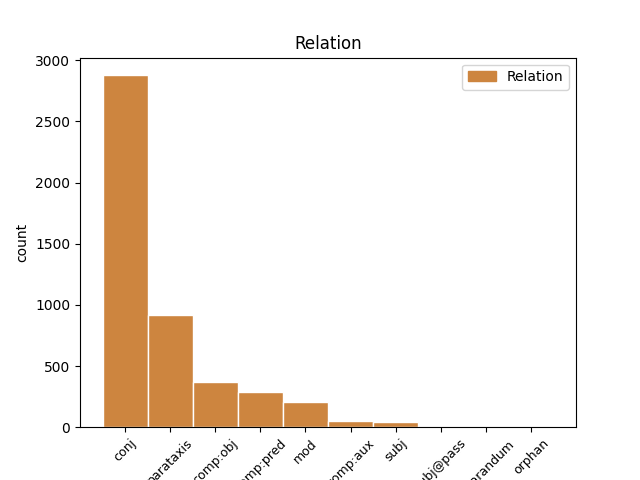
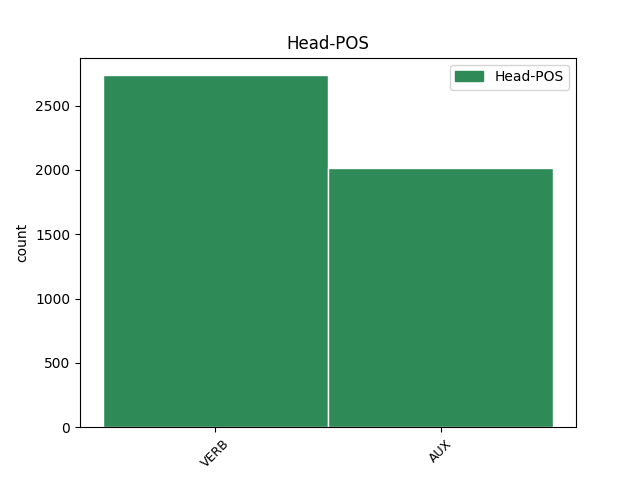
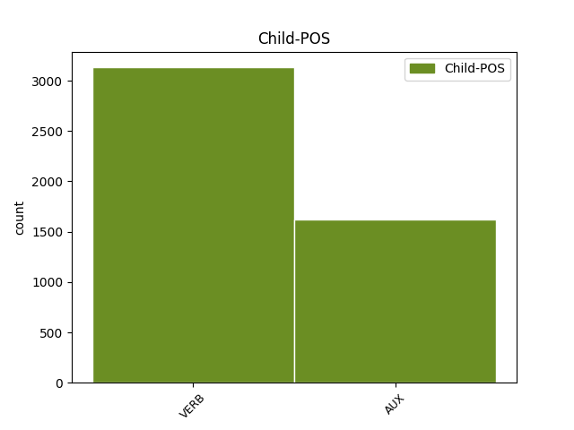

Distribution of features within this leaf



Agreement Rules sorted by frequency.
1 Du _ _ _ _ 0 _ _ _
2 må måtte AUX _ Mood=Ind|Tense=Pres|VerbForm=Fin 0 _ _ _
3 være _ _ _ _ 0 _ _ _
4 innstilt _ _ _ _ 0 _ _ _
5 på _ _ _ _ 0 _ _ _
6 at _ _ _ _ 0 _ _ _
7 du _ _ _ _ 0 _ _ _
8 kan _ _ _ _ 0 _ _ _
9 få _ _ _ _ 0 _ _ _
10 fire _ _ _ _ 0 _ _ _
11 årstider _ _ _ _ 0 _ _ _
12 på _ _ _ _ 0 _ _ _
13 en _ _ _ _ 0 _ _ _
14 dag _ _ _ _ 0 _ _ _
15 , _ _ _ _ 0 _ _ _
16 mye _ _ _ _ 0 _ _ _
17 tåke _ _ _ _ 0 _ _ _
18 , _ _ _ _ 0 _ _ _
19 vind _ _ _ _ 0 _ _ _
20 og _ _ _ _ 0 _ _ _
21 regn _ _ _ _ 0 _ _ _
22 , _ _ _ _ 0 _ _ _
23 men _ _ _ _ 0 _ _ _
24 det _ _ _ _ 0 _ _ _
25 blir bli VERB _ Mood=Ind|Tense=Pres|VerbForm=Fin 2 conj _ _
26 aldri _ _ _ _ 0 _ _ _
27 veldig _ _ _ _ 0 _ _ _
28 kaldt _ _ _ _ 0 _ _ _
29 . _ _ _ _ 0 _ _ _
Disagree Examples:
1 - _ _ _ _ 0 _ _ _
2 FN _ _ _ _ 0 _ _ _
3 er være AUX _ Mood=Ind|Tense=Pres|VerbForm=Fin 0 _ _ _
4 eneste _ _ _ _ 0 _ _ _
5 globale _ _ _ _ 0 _ _ _
6 organisasjon _ _ _ _ 0 _ _ _
7 som _ _ _ _ 0 _ _ _
8 arbeider _ _ _ _ 0 _ _ _
9 for _ _ _ _ 0 _ _ _
10 fred _ _ _ _ 0 _ _ _
11 og _ _ _ _ 0 _ _ _
12 forebygger _ _ _ _ 0 _ _ _
13 krig _ _ _ _ 0 _ _ _
14 , _ _ _ _ 0 _ _ _
15 og _ _ _ _ 0 _ _ _
16 vi _ _ _ _ 0 _ _ _
17 støtter _ _ _ _ 0 _ _ _
18 mannen _ _ _ _ 0 _ _ _
19 som _ _ _ _ 0 _ _ _
20 har _ _ _ _ 0 _ _ _
21 gjort _ _ _ _ 0 _ _ _
22 mer _ _ _ _ 0 _ _ _
23 enn _ _ _ _ 0 _ _ _
24 andre _ _ _ _ 0 _ _ _
25 for _ _ _ _ 0 _ _ _
26 disse _ _ _ _ 0 _ _ _
27 prinsippene _ _ _ _ 0 _ _ _
28 ( _ _ _ _ 0 _ _ _
29 les lese VERB _ Mood=Imp|VerbForm=Fin 3 parataxis _ _
30 : _ _ _ _ 0 _ _ _
31 Kofi _ _ _ _ 0 _ _ _
32 Annan _ _ _ _ 0 _ _ _
33 ) _ _ _ _ 0 _ _ _
34 , _ _ _ _ 0 _ _ _
35 sa _ _ _ _ 0 _ _ _
36 blant _ _ _ _ 0 _ _ _
37 annet _ _ _ _ 0 _ _ _
38 Egeland _ _ _ _ 0 _ _ _
39 . _ _ _ _ 0 _ _ _
1 Forestill forestille VERB _ Mood=Imp|VerbForm=Fin 0 _ _ _
2 deg _ _ _ _ 0 _ _ _
3 en _ _ _ _ 0 _ _ _
4 liten _ _ _ _ 0 _ _ _
5 krokodille _ _ _ _ 0 _ _ _
6 i _ _ _ _ 0 _ _ _
7 et _ _ _ _ 0 _ _ _
8 lite _ _ _ _ 0 _ _ _
9 bur _ _ _ _ 0 _ _ _
10 med _ _ _ _ 0 _ _ _
11 en _ _ _ _ 0 _ _ _
12 stor _ _ _ _ 0 _ _ _
13 krokodille _ _ _ _ 0 _ _ _
14 ved _ _ _ _ 0 _ _ _
15 siden _ _ _ _ 0 _ _ _
16 av _ _ _ _ 0 _ _ _
17 , _ _ _ _ 0 _ _ _
18 og _ _ _ _ 0 _ _ _
19 alt _ _ _ _ 0 _ _ _
20 som _ _ _ _ 0 _ _ _
21 skiller _ _ _ _ 0 _ _ _
22 dem _ _ _ _ 0 _ _ _
23 er være AUX _ Mood=Ind|Tense=Pres|VerbForm=Fin 1 conj _ _
24 en _ _ _ _ 0 _ _ _
25 hønsenetting _ _ _ _ 0 _ _ _
26 . _ _ _ _ 0 _ _ _
1 Kall kalle VERB _ Mood=Imp|VerbForm=Fin 0 _ _ _
2 det _ _ _ _ 0 _ _ _
3 gjerne _ _ _ _ 0 _ _ _
4 krisemaksimering _ _ _ _ 0 _ _ _
5 , _ _ _ _ 0 _ _ _
6 men _ _ _ _ 0 _ _ _
7 igjen _ _ _ _ 0 _ _ _
8 ser se VERB _ Mood=Ind|Tense=Pres|VerbForm=Fin 1 conj _ _
9 vi _ _ _ _ 0 _ _ _
10 at _ _ _ _ 0 _ _ _
11 føre _ _ _ _ 0 _ _ _
12 var-prinsippet _ _ _ _ 0 _ _ _
13 nedprioriteres _ _ _ _ 0 _ _ _
14 , _ _ _ _ 0 _ _ _
15 mens _ _ _ _ 0 _ _ _
16 langtidseffekter _ _ _ _ 0 _ _ _
17 tar _ _ _ _ 0 _ _ _
18 tid _ _ _ _ 0 _ _ _
19 å _ _ _ _ 0 _ _ _
20 studere _ _ _ _ 0 _ _ _
21 ! _ _ _ _ 0 _ _ _
1 La la VERB _ Mood=Imp|VerbForm=Fin 0 _ _ _
2 oss _ _ _ _ 0 _ _ _
3 gå _ _ _ _ 0 _ _ _
4 før _ _ _ _ 0 _ _ _
5 vi _ _ _ _ 0 _ _ _
6 løper _ _ _ _ 0 _ _ _
7 , _ _ _ _ 0 _ _ _
8 sier si VERB _ Mood=Ind|Tense=Pres|VerbForm=Fin 1 parataxis _ _
9 spissen _ _ _ _ 0 _ _ _
10 . _ _ _ _ 0 _ _ _
1 La la VERB _ Mood=Imp|VerbForm=Fin 0 _ _ _
2 oss _ _ _ _ 0 _ _ _
3 gå _ _ _ _ 0 _ _ _
4 før _ _ _ _ 0 _ _ _
5 vi _ _ _ _ 0 _ _ _
6 løper _ _ _ _ 0 _ _ _
7 , _ _ _ _ 0 _ _ _
8 sier si VERB _ Mood=Ind|Tense=Pres|VerbForm=Fin 1 parataxis _ _
9 Gudjohnsen _ _ _ _ 0 _ _ _
10 og _ _ _ _ 0 _ _ _
11 ler _ _ _ _ 0 _ _ _
12 . _ _ _ _ 0 _ _ _